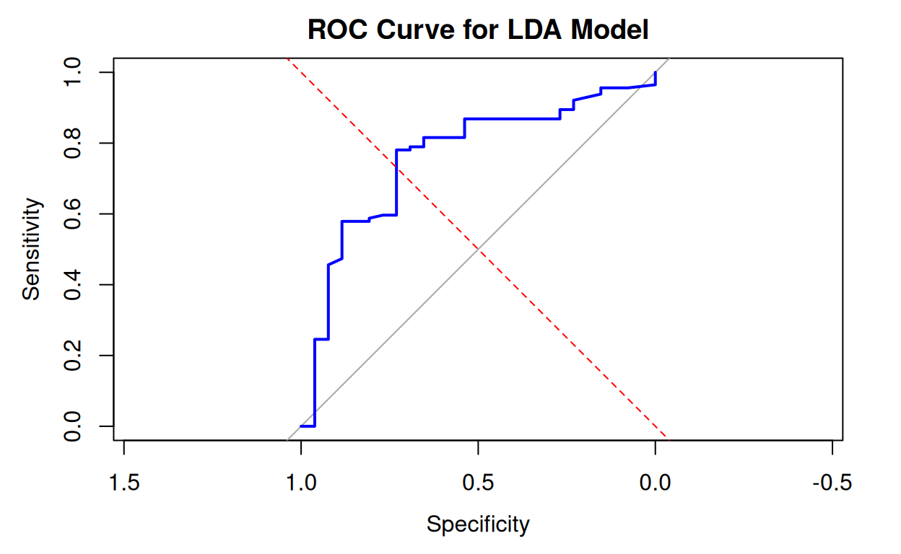

Research Question
What academic, demographic, and institutional characteristics best predict whether a graduate will be successfully placed in a job after completing their degree?
1. Introduction
The transition from education to employment is a pivotal moment in a graduates life, and understanding the factors that influence successful job placement is critical for educators, policymakers, and students alike. In the age of data-driven decision-making, leveraging predictive analytics can offer valuable insights into employment outcomes and guide strategies to enhance graduate employability.
This project utilizes the Job Placement Dataset(https://www.kaggle.com/datasets/mahad049/job-placement-dataset?resource=download) from Kaggle, which contains demographic, educational, and professional details of recent graduates along with their job placement status and salary (where applicable). The dataset includes key attributes such as academic performance, degree specialization, gender, and prior work experience, making it highly suitable for modeling employment outcomes.
The dataset is well-structured, relatively clean, and includes both categorical and numerical variablesmaking it an ideal candidate for demonstrating a wide range of statistical modeling techniques, including regression, classification, and dimensionality reduction. It also supports the broader social impact goal of understanding barriers to employment and highlighting equity-related patterns in job placement.
id name gender age degree
1 1 John Doe Male 25 Bachelor's
2 2 Jane Smith Female 24 Bachelor's
3 3 Michael Johnson Male 26 Bachelor's
4 4 Emily Davis Female 23 Bachelor's
5 5 David Brown Male 24 Bachelor's
6 6 Sarah Wilson Female 25 Bachelor's
stream college_name
1 Computer Science Harvard University
2 Electrical Engineering Massachusetts Institute of Technology
3 Mechanical Engineering Stanford University
4 Information Technology Yale University
5 Computer Science Princeton University
6 Electronics and Communication Columbia University
placement_status salary gpa years_of_experience
1 Placed 60000 3.7 2
2 Placed 65000 3.6 1
3 Placed 58000 3.8 3
4 Not Placed 0 3.5 2
5 Placed 62000 3.9 2
6 Placed 63000 3.7 1Objectives
This project aims to:
1. Predict Job Placement Outcomes Develop classification models to predict whether a graduate is likely to be placed based on their academic and demographic characteristics.
2. Estimate Graduate Salary Use regression models to estimate the salary of placed graduates, identifying which factors most influence salary levels.
3. Explore Nonlinear and Multiclass Outcomes Examine whether non-linear relationships (e.g., between academic scores and salary) exist, and use multiclass modeling to categorize salary levels (e.g., low, medium, high).
4. Evaluate Feature Importance and Regularization Effects Apply Lasso or Ridge regression to explore which features are most predictive of placement outcomes and how regularization can improve generalization.
Data Prepocessing
glimpse(job)Rows: 700
Columns: 11
$ id <int> 1, 2, 3, 4, 5, 6, 7, 8, 9, 10, 11, 12, 1
$ name <chr> "John Doe", "Jane Smith", "Michael Johns
$ gender <chr> "Male", "Female", "Male", "Female", "Mal
$ age <int> 25, 24, 26, 23, 24, 25, 26, 24, 25, 23,
$ degree <chr> "Bachelor's", "Bachelor's", "Bachelor's"
$ stream <chr> "Computer Science", "Electrical Engineer
$ college_name <chr> "Harvard University", "Massachusetts Ins
$ placement_status <chr> "Placed", "Placed", "Placed", "Not Place
$ salary <int> 60000, 65000, 58000, 0, 62000, 63000, 59
$ gpa <dbl> 3.7, 3.6, 3.8, 3.5, 3.9, 3.7, 3.8, 3.6,
$ years_of_experience <int> 2, 1, 3, 2, 2, 1, 3, 2, 2, 1, 2, 3, 2, 1 [1] "Harvard University"
[2] "Massachusetts Institute of Technology"
[3] "Stanford University"
[4] "Yale University"
[5] "Princeton University"
[6] "Columbia University"
[7] "California Institute of Technology"
[8] "University of Chicago"
[9] "University of Pennsylvania"
[10] "Northwestern University"
[11] "Duke University"
[12] "Johns Hopkins University"
[13] "University of California--Berkeley"
[14] "University of Michigan--Ann Arbor"
[15] "University of California--Los Angeles"
[16] "University of Virginia"
[17] "University of Wisconsin--Madison"
[18] "University of Illinois--Urbana-Champaign"
[19] "University of North Carolina--Chapel Hill"
[20] "University of Washington"
[21] "University of California--San Diego"
[22] "University of Texas--Austin"
[23] "University of California--Santa Barbara"
[24] "University of Southern California"
[25] "University of Florida"
[26] "University of Minnesota--Twin Cities"
[27] "University of Maryland--College Park"
[28] "University of California--Davis"
[29] "University of Pittsburgh"
[30] "University of Colorado--Boulder"
[31] "University of Rochester"
[32] "Boston College"
[33] "Rice University"
[34] "University of California--Irvine"
[35] "Georgetown University"
[36] "University of Georgia"
[37] "University of Notre Dame"
[38] "University of Iowa"
[39] "University of California--Santa Cruz"
[40] "University of Connecticut"
[41] "University of California--Riverside"
[42] "University of Delaware"
[43] "University of California--San Francisco"
[44] "University of Texas--Dallas" We will exclude the degree column from our analysis since it exhibits no variability, containing only a single unique value across all observations, making it uninformative for modeling
Stream Column[1] "Computer Science" "Electrical Engineering"
[3] "Mechanical Engineering" "Information Technology"
[5] "Electronics and Communication"Checking for Missing values
miss_var_summary(job)# A tibble: 11 3
variable n_miss pct_miss
<chr> <int> <num>
1 years_of_experience 1 0.143
2 id 0 0
3 name 0 0
4 gender 0 0
5 age 0 0
6 degree 0 0
7 stream 0 0
8 college_name 0 0
9 placement_status 0 0
10 salary 0 0
11 gpa 0 0 gg_miss_var(job)years_of_experience column. The missing value has a percentage of 0.143 with less significant to the dataset if dropped, therefore we will drop the missing values from the column
1. GPA Distribution
ggplot(job, aes(x = gpa)) +
geom_histogram(binwidth = 0.1, fill = "steelblue", color = "black") +
labs(title = "Distribution of GPA", x = "GPA", y = "Count") +
theme_minimal()The data shows a right-skewed distribution with GPAs ranging from approximately 3.3 to 3.9 on the standard 4.0 scale. Most students demonstrate strong academic performance, with the highest concentration occurring around the 3.7-3.75 range
2. GPA Distribution by Placement Status
ggplot(job, aes(x = gpa, fill = placement_status)) +
geom_density(alpha = 0.7) +
labs(title = "GPA Distribution by Placement Status",
x = "GPA", y = "Density") +
scale_fill_brewer(palette = "Set1") +
theme_minimal()The Not Placed students are concentrated primarily in the lower to middle GPA range (3.4-3.7), with their highest density occurring around 3.6-3.65. Placed students (blue) show a multimodal distribution with three distinct peaks occurring at approximately 3.7, 3.8, and 3.9.
3. Age Distribution
ggplot(job, aes(x = age)) +
geom_histogram(binwidth = 1, fill = "#00FF7F", color = "black") +
labs(title = "Distribution of Age", x = "Age", y = "Count") +
theme_minimal()This data set focused on students with the age range of 23 -26.
4. Placement Rate by Gender
gender_placement <- job %>%
group_by(gender, placement_status) %>%
summarise(count = n(), .groups = 'drop') %>%
group_by(gender) %>%
mutate(percentage = count / sum(count) * 100)
ggplot(gender_placement, aes(x = gender, y = percentage, fill = placement_status)) +
geom_bar(stat = "identity") +
geom_text(aes(label = paste0(round(percentage), "%")),
position = position_stack(vjust = 0.5)) +
labs(title = "Placement Rate by Gender", y = "Percentage (%)", x = "Gender") +
scale_fill_brewer(palette = "Set1") +
theme_minimal()There is a slight difference in placement outcomes between genders, with females having a marginally higher success rate (83% placed vs.17% not placed) compared to males (80% placed vs.20% not placed). This difference suggests that female participants may have a slight advantage in the placement process, though the difference is relatively small.
5. Placement Rate by Stream(Course Specialization)stream_placement <- job %>%
group_by(stream, placement_status) %>%
summarise(count = n(), .groups = 'drop') %>%
group_by(stream) %>%
mutate(percentage = count / sum(count) * 100)
ggplot(stream_placement, aes(x = reorder(stream, percentage), y = percentage,
fill = placement_status)) +
geom_bar(stat = "identity") +
geom_text(aes(label = paste0(round(percentage), "%")),
position = position_stack(vjust = 0.5)) +
labs(title = "Placement Rate by Stream", y = "Percentage (%)", x = "Stream") +
coord_flip() +
scale_fill_brewer(palette = "Set1") +
theme_minimal()
Electronics and Communication has a 91% placement rate, indicating strong industry demand for graduates in this field. Information Technology has 84% placement rate, suggesting that IT skills remain highly marketable in the current job landscape. Mechanical Engineering shows strong performance with an 81% placement rate, demonstrating that traditional engineering fields maintain solid employment prospects. Computer Science has the lowest placement rate among the streams at 75%, which might be surprising given the high demand for computing skills. This suggests that either there might be higher competition in this field or specific factors affecting placement for these particular Computer Science students.
Salary Analysis of placed Student For the placed students we will do a salary analysis 6. Salary Distribution
placed_students <- job %>% filter(placement_status == "Placed")
ggplot(placed_students, aes(x = salary)) +
geom_histogram(binwidth = 2000, fill = "purple", color = "black") +
labs(title = "Salary Distribution for Placed Students",
x = "Salary", y = "Count") +
scale_x_continuous(labels = scales::comma) +
theme_minimal()ggplot(placed_students, aes(x = stream, y = salary, fill = stream)) +
geom_boxplot() +
labs(title = "Salary Distribution by Stream", x = "Stream", y = "Salary") +
scale_y_continuous(labels = scales::comma) +
coord_flip() +
theme_minimal() +
theme(legend.position = "none")Computer Science shows the highest median salary at approximately $65,000. The box spans from about $64,000 to $66,000, indicating a relatively tight interquartile range (IQR) and consistent salaries across Computer Science graduates.Electronics and Communication has the lowest median salary among these disciplines (around $63,500)
8. GPA, Experience and Placement Status
ggplot(job, aes(x = gpa, y = years_of_experience, color = placement_status)) +
geom_jitter(alpha = 0.7) +
labs(title = "GPA vs Experience by Placement Status",
x = "GPA", y = "Years of Experience") +
scale_color_brewer(palette = "Set1") +
theme_minimal()From this we can see that Experience appears to be a critical factor in placement success. Students with 3 years of experience have overwhelmingly positive placement outcomes regardless of their GPA.GPA becomes more influential for students with less experience. For those with only 1-2 years of experience, a higher GPA correlates with better placement chances.The most challenging placement scenario is for students with both low experience (1 year or less) and lower GPAs (below 3.6).
Data Preprocessing
We have universities but we do not have their rankings. In this stage we will create some dummy rankings(tiers) for the universities to use in our model
top_tier <- c("Harvard University", "Massachusetts Institute of Technology",
"Stanford University", "Princeton University", "Columbia University",
"California Institute of Technology", "Yale University")
second_tier <- c("University of Chicago", "University of Pennsylvania",
"Northwestern University", "Duke University", "Johns Hopkins University",
"University of California--Berkeley", "University of Michigan--Ann Arbor",
"University of California--Los Angeles")Creating a binary placement for the placement_status variable.1 represents Placed and 0 represents any other status e.g Not Placed
[1] 1 1 1 0 1 1job_recipe <- recipe(placement ~., data = job) %>%
#we will remove variables that will not be used in the modelling
step_rm(id, name, degree, placement_status) %>%
step_string2factor(gender, stream, college_name) %>%
step_mutate(
gpa_cat = case_when(
gpa <3.0 ~ "low",
gpa >= 3.0 & gpa < 3.5 ~ "medium",
gpa >= 3.5 & gpa < 3.8 ~ "high",
gpa >= 3.8 ~ "very_high"
)
)%>%
step_mutate(
college_tier = case_when(
college_name %in% top_tier ~ "Tier1",
college_name %in% second_tier ~ "Tier2",
TRUE ~ "Tier3"))%>%
# we now convert these ordinal variables to ordered factor
step_mutate(
gpa_cat = factor(gpa_cat, levels = c("low", "medium", "high", "very_high"), ordered = TRUE),
college_tier = factor (college_tier, levels = c("Tier3", "Tier2", "Tier1"), ordered = TRUE)
) %>%
# One hot encoding for variables with fewer levels
step_dummy(gender, stream, one_hot = TRUE)
job_prep <- prep(job_recipe, training = job)
job_processed <- bake(job_prep, new_data = NULL)
glimpse(job_processed)Rows: 699
Columns: 15
$ age <int> 25, 24, 26, 23, 24, 25,
$ college_name <fct> Harvard University, Mas
$ salary <int> 60000, 65000, 58000, 0,
$ gpa <dbl> 3.7, 3.6, 3.8, 3.5, 3.9
$ years_of_experience <int> 2, 1, 3, 2, 2, 1, 3, 2,
$ placement <dbl> 1, 1, 1, 0, 1, 1, 1, 0,
$ gpa_cat <ord> high, high, very_high,
$ college_tier <ord> Tier1, Tier1, Tier1, Ti
$ gender_Female <dbl> 0, 1, 0, 1, 0, 1, 0, 1,
$ gender_Male <dbl> 1, 0, 1, 0, 1, 0, 1, 0,
$ stream_Computer.Science <dbl> 1, 0, 0, 0, 1, 0, 0, 1,
$ stream_Electrical.Engineering <dbl> 0, 1, 0, 0, 0, 0, 0, 0,
$ stream_Electronics.and.Communication <dbl> 0, 0, 0, 0, 0, 1, 0, 0,
$ stream_Information.Technology <dbl> 0, 0, 0, 1, 0, 0, 1, 0,
$ stream_Mechanical.Engineering <dbl> 0, 0, 1, 0, 0, 0, 0, 0,Correlation of the different variables that will be used
1. Logistic Regression
*Feature Selection We will use backward selection, forward selection and stepwise method to identify the important features for the model. Well create a new data set for feature selectiondata_mod <- job_processed %>%
dplyr:: select(-college_name) %>% # -salary
dplyr:: select(placement, age,gpa, years_of_experience, college_tier, starts_with("gender_"), starts_with("stream_"))
set.seed(2025)
job_split <- initial_split(data_mod, prop = 0.8, strata = placement)
train_data <- training(job_split)
test_data <- testing(job_split)
predictors <- c("age", "gpa", "years_of_experience", "college_tier",
"gender_Female", "gender_Male",
"stream_Computer.Science", "stream_Electrical.Engineering",
"stream_Electronics.and.Communication", "stream_Information.Technology",
"stream_Mechanical.Engineering")
train_data$placement <- as.factor(train_data$placement)
test_data$placement <- as.factor(test_data$placement)full_formula <- as.formula(paste("placement ~", paste(predictors, collapse = " + ")))
full_model <- glm(full_formula, family = binomial, data = train_data)
summary(full_model)
Call:
glm(formula = full_formula, family = binomial, data = train_data)
Coefficients: (2 not defined because of singularities)
Estimate Std. Error z value
(Intercept) 20.59249 287.70359 0.072
age -0.01506 0.11761 -0.128
gpa -5.16650 1.61302 -3.203
years_of_experience 2.65107 0.36702 7.223
college_tier.L 10.67399 610.18622 0.017
college_tier.Q 7.95213 352.29130 0.023
gender_Female 0.35057 0.32071 1.093
gender_Male NA NA NA
stream_Computer.Science -0.24432 0.43490 -0.562
stream_Electrical.Engineering 0.02284 0.44605 0.051
stream_Electronics.and.Communication 0.96826 0.52642 1.839
stream_Information.Technology 0.55499 0.49691 1.117
stream_Mechanical.Engineering NA NA NA
Pr(>|z|)
(Intercept) 0.94294
age 0.89814
gpa 0.00136 **
years_of_experience 5.08e-13 ***
college_tier.L 0.98604
college_tier.Q 0.98199
gender_Female 0.27436
gender_Male NA
stream_Computer.Science 0.57426
stream_Electrical.Engineering 0.95916
stream_Electronics.and.Communication 0.06587 .
stream_Information.Technology 0.26404
stream_Mechanical.Engineering NA
---
Signif. codes: 0 '***' 0.001 '**' 0.01 '*' 0.05 '.' 0.1 ' ' 1
(Dispersion parameter for binomial family taken to be 1)
Null deviance: 537.13 on 558 degrees of freedom
Residual deviance: 407.70 on 548 degrees of freedom
AIC: 429.7
Number of Fisher Scoring iterations: 15Create null model with just intercept
null_model <- glm(placement ~ 1, family = binomial, data = train_data)
#summary(null_model)Backward Selection
cat("\n*** PERFORMING BACKWARD SELECTION ***\n")
*** PERFORMING BACKWARD SELECTION ***backward_model <- stepAIC(full_model, direction = "backward",
trace = TRUE, k = 2)Start: AIC=429.7
placement ~ age + gpa + years_of_experience + college_tier +
gender_Female + gender_Male + stream_Computer.Science + stream_Electrical.Engineering +
stream_Electronics.and.Communication + stream_Information.Technology +
stream_Mechanical.Engineering
Step: AIC=429.7
placement ~ age + gpa + years_of_experience + college_tier +
gender_Female + gender_Male + stream_Computer.Science + stream_Electrical.Engineering +
stream_Electronics.and.Communication + stream_Information.Technology
Step: AIC=429.7
placement ~ age + gpa + years_of_experience + college_tier +
gender_Female + stream_Computer.Science + stream_Electrical.Engineering +
stream_Electronics.and.Communication + stream_Information.Technology
Df Deviance AIC
- stream_Electrical.Engineering 1 407.70 427.70
- age 1 407.71 427.71
- stream_Computer.Science 1 408.01 428.01
- gender_Female 1 408.91 428.91
- stream_Information.Technology 1 408.96 428.96
<none> 407.70 429.70
- stream_Electronics.and.Communication 1 411.25 431.25
- gpa 1 418.25 438.25
- college_tier 2 450.90 468.90
- years_of_experience 1 484.13 504.13
Step: AIC=427.7
placement ~ age + gpa + years_of_experience + college_tier +
gender_Female + stream_Computer.Science + stream_Electronics.and.Communication +
stream_Information.Technology
Df Deviance AIC
- age 1 407.72 425.72
- stream_Computer.Science 1 408.29 426.29
- gender_Female 1 408.94 426.94
- stream_Information.Technology 1 409.50 427.50
<none> 407.70 427.70
- stream_Electronics.and.Communication 1 412.19 430.19
- gpa 1 418.58 436.58
- college_tier 2 450.90 466.90
- years_of_experience 1 484.54 502.54
Step: AIC=425.72
placement ~ gpa + years_of_experience + college_tier + gender_Female +
stream_Computer.Science + stream_Electronics.and.Communication +
stream_Information.Technology
Df Deviance AIC
- stream_Computer.Science 1 408.29 424.29
- gender_Female 1 408.94 424.94
- stream_Information.Technology 1 409.55 425.55
<none> 407.72 425.72
- stream_Electronics.and.Communication 1 412.19 428.19
- gpa 1 418.97 434.97
- college_tier 2 450.90 464.90
- years_of_experience 1 485.52 501.52
Step: AIC=424.29
placement ~ gpa + years_of_experience + college_tier + gender_Female +
stream_Electronics.and.Communication + stream_Information.Technology
Df Deviance AIC
<none> 408.29 424.29
- gender_Female 1 411.21 425.21
- stream_Information.Technology 1 412.83 426.83
- stream_Electronics.and.Communication 1 414.09 428.09
- gpa 1 419.88 433.88
- college_tier 2 451.68 463.68
- years_of_experience 1 487.93 501.93backward_summary <- summary(backward_model)Forward Selection
cat("\n*** PERFORMING FORWARD SELECTION ***\n")
*** PERFORMING FORWARD SELECTION ***forward_model <- stepAIC(null_model,
scope = list(lower = formula(null_model),
upper = formula(full_model)),
direction = "forward",
trace = TRUE, k = 2)Start: AIC=539.13
placement ~ 1
Df Deviance AIC
+ years_of_experience 1 476.12 480.12
+ gpa 1 518.30 522.30
+ stream_Computer.Science 1 526.42 530.42
+ college_tier 2 528.97 534.97
+ stream_Electronics.and.Communication 1 531.47 535.47
+ stream_Information.Technology 1 532.93 536.93
<none> 537.13 539.13
+ gender_Female 1 535.39 539.39
+ gender_Male 1 535.39 539.39
+ age 1 536.83 540.83
+ stream_Electrical.Engineering 1 537.09 541.09
+ stream_Mechanical.Engineering 1 537.13 541.13
Step: AIC=480.12
placement ~ years_of_experience
Df Deviance AIC
+ college_tier 2 432.51 440.51
+ stream_Computer.Science 1 464.60 470.60
+ stream_Electronics.and.Communication 1 467.96 473.96
+ gender_Male 1 469.13 475.13
+ gender_Female 1 469.13 475.13
+ gpa 1 469.62 475.62
+ stream_Information.Technology 1 474.06 480.06
<none> 476.12 480.12
+ stream_Mechanical.Engineering 1 475.56 481.56
+ age 1 475.61 481.61
+ stream_Electrical.Engineering 1 475.79 481.79
Step: AIC=440.51
placement ~ years_of_experience + college_tier
Df Deviance AIC
+ gpa 1 421.93 431.93
+ stream_Computer.Science 1 423.78 433.78
+ gender_Male 1 426.92 436.92
+ gender_Female 1 426.92 436.92
+ stream_Electronics.and.Communication 1 427.45 437.45
<none> 432.51 440.51
+ stream_Information.Technology 1 431.00 441.00
+ stream_Mechanical.Engineering 1 431.73 441.73
+ stream_Electrical.Engineering 1 432.33 442.33
+ age 1 432.38 442.38
Step: AIC=431.93
placement ~ years_of_experience + college_tier + gpa
Df Deviance AIC
+ stream_Computer.Science 1 414.05 426.05
+ stream_Electronics.and.Communication 1 414.60 426.60
+ gender_Female 1 417.59 429.59
+ gender_Male 1 417.59 429.59
<none> 421.93 431.93
+ stream_Information.Technology 1 420.18 432.18
+ age 1 421.24 433.24
+ stream_Electrical.Engineering 1 421.88 433.88
+ stream_Mechanical.Engineering 1 421.93 433.93
Step: AIC=426.05
placement ~ years_of_experience + college_tier + gpa + stream_Computer.Science
Df Deviance AIC
+ stream_Electronics.and.Communication 1 409.94 423.94
<none> 414.05 426.05
+ stream_Electrical.Engineering 1 412.48 426.48
+ gender_Female 1 412.94 426.94
+ gender_Male 1 412.94 426.94
+ stream_Mechanical.Engineering 1 413.26 427.26
+ stream_Information.Technology 1 413.95 427.95
+ age 1 414.02 428.02
Step: AIC=423.94
placement ~ years_of_experience + college_tier + gpa + stream_Computer.Science +
stream_Electronics.and.Communication
Df Deviance AIC
<none> 409.94 423.94
+ stream_Information.Technology 1 408.94 424.94
+ stream_Electrical.Engineering 1 409.45 425.45
+ gender_Male 1 409.55 425.55
+ gender_Female 1 409.55 425.55
+ stream_Mechanical.Engineering 1 409.82 425.82
+ age 1 409.91 425.91forward_summary <- summary(forward_model)
#print(forward_summary)Stepwise Selection
cat("\n*** PERFORMING STEPWISE SELECTION ***\n")
*** PERFORMING STEPWISE SELECTION ***stepwise_model <- stepAIC(null_model,
scope = list(lower = formula(null_model),
upper = formula(full_model)),
direction = "both",
trace = TRUE, k = 2)Start: AIC=539.13
placement ~ 1
Df Deviance AIC
+ years_of_experience 1 476.12 480.12
+ gpa 1 518.30 522.30
+ stream_Computer.Science 1 526.42 530.42
+ college_tier 2 528.97 534.97
+ stream_Electronics.and.Communication 1 531.47 535.47
+ stream_Information.Technology 1 532.93 536.93
<none> 537.13 539.13
+ gender_Female 1 535.39 539.39
+ gender_Male 1 535.39 539.39
+ age 1 536.83 540.83
+ stream_Electrical.Engineering 1 537.09 541.09
+ stream_Mechanical.Engineering 1 537.13 541.13
Step: AIC=480.12
placement ~ years_of_experience
Df Deviance AIC
+ college_tier 2 432.51 440.51
+ stream_Computer.Science 1 464.60 470.60
+ stream_Electronics.and.Communication 1 467.96 473.96
+ gender_Male 1 469.13 475.13
+ gender_Female 1 469.13 475.13
+ gpa 1 469.62 475.62
+ stream_Information.Technology 1 474.06 480.06
<none> 476.12 480.12
+ stream_Mechanical.Engineering 1 475.56 481.56
+ age 1 475.61 481.61
+ stream_Electrical.Engineering 1 475.79 481.79
- years_of_experience 1 537.13 539.13
Step: AIC=440.51
placement ~ years_of_experience + college_tier
Df Deviance AIC
+ gpa 1 421.93 431.93
+ stream_Computer.Science 1 423.78 433.78
+ gender_Male 1 426.92 436.92
+ gender_Female 1 426.92 436.92
+ stream_Electronics.and.Communication 1 427.45 437.45
<none> 432.51 440.51
+ stream_Information.Technology 1 431.00 441.00
+ stream_Mechanical.Engineering 1 431.73 441.73
+ stream_Electrical.Engineering 1 432.33 442.33
+ age 1 432.38 442.38
- college_tier 2 476.12 480.12
- years_of_experience 1 528.97 534.97
Step: AIC=431.93
placement ~ years_of_experience + college_tier + gpa
Df Deviance AIC
+ stream_Computer.Science 1 414.05 426.05
+ stream_Electronics.and.Communication 1 414.60 426.60
+ gender_Female 1 417.59 429.59
+ gender_Male 1 417.59 429.59
<none> 421.93 431.93
+ stream_Information.Technology 1 420.18 432.18
+ age 1 421.24 433.24
+ stream_Electrical.Engineering 1 421.88 433.88
+ stream_Mechanical.Engineering 1 421.93 433.93
- gpa 1 432.51 440.51
- college_tier 2 469.62 475.62
- years_of_experience 1 498.09 506.09
Step: AIC=426.05
placement ~ years_of_experience + college_tier + gpa + stream_Computer.Science
Df Deviance AIC
+ stream_Electronics.and.Communication 1 409.94 423.94
<none> 414.05 426.05
+ stream_Electrical.Engineering 1 412.48 426.48
+ gender_Female 1 412.94 426.94
+ gender_Male 1 412.94 426.94
+ stream_Mechanical.Engineering 1 413.26 427.26
+ stream_Information.Technology 1 413.95 427.95
+ age 1 414.02 428.02
- stream_Computer.Science 1 421.93 431.93
- gpa 1 423.78 433.78
- college_tier 2 458.92 466.92
- years_of_experience 1 487.71 497.71
Step: AIC=423.94
placement ~ years_of_experience + college_tier + gpa + stream_Computer.Science +
stream_Electronics.and.Communication
Df Deviance AIC
<none> 409.94 423.94
+ stream_Information.Technology 1 408.94 424.94
+ stream_Electrical.Engineering 1 409.45 425.45
+ gender_Male 1 409.55 425.55
+ gender_Female 1 409.55 425.55
+ stream_Mechanical.Engineering 1 409.82 425.82
+ age 1 409.91 425.91
- stream_Electronics.and.Communication 1 414.05 426.05
- stream_Computer.Science 1 414.60 426.60
- gpa 1 421.41 433.41
- college_tier 2 453.58 463.58
- years_of_experience 1 486.80 498.80stepwise_summary <- summary(stepwise_model)Comparing the different selection Techniques
aic_comparison <- data.frame(
Model = c("Full Model", "Backward Selection", "Forward Selection", "Stepwise Selection"),
AIC = c(AIC(full_model), AIC(backward_model), AIC(forward_model), AIC(stepwise_model))
)
print(aic_comparison) Model AIC
1 Full Model 429.6968
2 Backward Selection 424.2939
3 Forward Selection 423.9430
4 Stepwise Selection 423.9430The Full Model has the highest AIC value (429.6968), suggesting its the least optimal approach among those tested. This likely indicates that the full model may be overfit or includes variables that dont contribute meaningfully to predictive power. Backward Selection shows improvement with an AIC of 424.2939, indicating that removing certain variables from the full model improved the balance between fit and complexity. Forward Selection and Stepwise Selection both achieved the lowest and identical AIC values (423.9430), suggesting these approaches identified the most optimal set of predictors. These methods appear to have converged on the same final model. The nearly identical results between Forward and Stepwise Selection suggest that starting from different points led to the same optimal variable set, which strengthens confidence in this model specification.
Visualizing AIC Comparisonggplot(aic_comparison, aes(x = reorder(Model, AIC), y = AIC)) +
geom_bar(stat = "identity", fill = "steelblue") +
coord_flip() +
labs(title = "Model Comparison by AIC",
x = "Model",
y = "AIC (lower is better)") +
theme_minimal()Extracting Important features
get_model_vars <- function(model) {
vars <- names(coef(model))
vars <- vars[vars != "(Intercept)"]
return(vars)
}
backward_vars <- get_model_vars(backward_model)
forward_vars <- get_model_vars(forward_model)
stepwise_vars <- get_model_vars(stepwise_model)
full_vars <- get_model_vars(full_model)
# Create comparison of selected variables
all_vars <- unique(c(full_vars, backward_vars, forward_vars, stepwise_vars))
var_selection <- data.frame(
Variable = all_vars,
Full = all_vars %in% full_vars,
Backward = all_vars %in% backward_vars,
Forward = all_vars %in% forward_vars,
Stepwise = all_vars %in% stepwise_vars
)Visualizing variable
var_selection_long <- var_selection %>%
pivot_longer(cols = c(Full, Backward, Forward, Stepwise),
names_to = "Model",
values_to = "Selected") %>%
mutate(Selected = ifelse(Selected, "Yes", "No"))
ggplot(var_selection_long, aes(x = Variable, y = Model, fill = Selected)) +
geom_tile() +
scale_fill_manual(values = c("white", "steelblue")) +
labs(title = "Feature Selection Comparison",
x = "Variable",
y = "Selection Method") +
theme_minimal() +
theme(axis.text.x = element_text(angle = 45, hjust = 1))Both Forward and Stepwise selection methods chose identical features, which explains the identical AIC values (423.9430). Backward Selection retained more features than Forward or stepwise selection methods. We had certain features appear in all selection methods i.e stream_Computer Science, years_of_experience, suggesting these are highly significant predictors for the model.
Model Evaluation on Test Data
evaluate_model <- function(model, test_data, model_name) {
probs <- predict(model, newdata = test_data, type = "response")
preds <- ifelse(probs > 0.5, 1, 0)
preds <- factor(preds, levels = levels(test_data$placement))
conf_mat <- confusionMatrix(preds, test_data$placement)
return(data.frame(
Model = model_name,
Accuracy = conf_mat$overall["Accuracy"],
Sensitivity = conf_mat$byClass["Sensitivity"],
Specificity = conf_mat$byClass["Specificity"],
F1 = conf_mat$byClass["F1"]
))
}
model_eval <- bind_rows(
evaluate_model(full_model, test_data, "Full Model"),
evaluate_model(backward_model, test_data, "Backward Selection"),
evaluate_model(forward_model, test_data, "Forward Selection"),
evaluate_model(stepwise_model, test_data, "Stepwise Selection")
)
print(model_eval) Model Accuracy Sensitivity Specificity
Accuracy...1 Full Model 0.7857143 0.1923077 0.9210526
Accuracy...2 Backward Selection 0.7857143 0.1923077 0.9210526
Accuracy...3 Forward Selection 0.7857143 0.2307692 0.9122807
Accuracy...4 Stepwise Selection 0.7857143 0.2307692 0.9122807
F1
Accuracy...1 0.2500000
Accuracy...2 0.2500000
Accuracy...3 0.2857143
Accuracy...4 0.28571430.786. This model is conceptually simpler and more computationally efficient
model_eval_long <- model_eval %>%
pivot_longer(cols = c(Accuracy, Sensitivity, Specificity, F1),
names_to = "Metric",
values_to = "Value")
ggplot(model_eval_long, aes(x = Model, y = Value, fill = Metric)) +
geom_bar(stat = "identity", position = "dodge") +
labs(title = "Performance Comparison of Feature Selection Methods",
x = "Model",
y = "Value") +
scale_fill_brewer(palette = "Set1") +
ylim(0, 1) +
theme_minimal() +
theme(axis.text.x = element_text(angle = 45, hjust = 1))tidy(forward_model, conf.int = TRUE)# A tibble: 7 7
term estimate std.error statistic p.value conf.low conf.high
<chr> <dbl> <dbl> <dbl> <dbl> <dbl> <dbl>
1 (Intercept) 20.8 286. 0.0728 9.42e- 1 11.9 133.
2 years_of_e 2.64 0.363 7.28 3.40e-13 1.96 3.39
3 college_ti 10.6 606. 0.0175 9.86e- 1 -47.4 NA
4 college_ti 7.94 350. 0.0227 9.82e- 1 -25.2 NA
5 gpa -5.22 1.56 -3.34 8.41e- 4 -8.33 -2.19
6 stream_Com -0.571 0.264 -2.16 3.05e- 2 -1.09 -0.0529
7 stream_Ele 0.869 0.452 1.92 5.44e- 2 0.0275 1.82 Years of experience is highly significant (p-value = 3.40e-13) with a positive coefficient of 2.64, indicating that each additional year of experience increases the outcome by approximately 2.64 units, holding other variables constant. This is the most statistically significant predictor in the model.
GPA has a significant negative relationship (p-value = 8.41e-04) with a coefficient of -5.22. This unexpected negative relationship suggests that, controlling for other factors, higher GPAs are associated with lower outcomes. Stream_Computer Science shows a significant negative effect (p-value = 0.03) with a coefficient of -0.57, suggesting this stream may have slightly worse outcomes compared to the reference stream.
Stream_Electronics and Communication is marginally significant (p-value = 0.054, just above the conventional 0.05 threshold) with a positive coefficient of 0.87, suggesting potentially better outcomes compared to the reference stream.
College tier variables (college_tier_L and college_tier_Q) show very high p-values (0.986 and 0.982) and are not statistically significant predictors in this model.
We will drop college_tier from the model
Final Model
fin_model <- glm(formula = placement ~ years_of_experience +
gpa + stream_Computer.Science + stream_Electronics.and.Communication,
family = binomial, data = train_data)
tidy(fin_model)# A tibble: 5 5
term estimate std.error statistic p.value
<chr> <dbl> <dbl> <dbl> <dbl>
1 (Intercept) 11.4 4.61 2.48 1.31e- 2
2 years_of_experience 1.68 0.249 6.72 1.84e-11
3 gpa -3.52 1.33 -2.65 8.01e- 3
4 stream_Computer.Science -0.631 0.252 -2.51 1.21e- 2
5 stream_Electronics.and.Commun 0.936 0.432 2.16 3.04e- 2plot(fin_model)

From the residuals vs fitted values plot linearity assumption appears to be violated as there is a visible pattern in the residuals rather than random scatter around the horizontal line at zero. This non-random pattern suggests the model may be missing important predictors or transformations. Homoscedasticity assumption (constant variance of errors) also appears to be violated due to the increasing spread of residuals at higher fitted values, with larger negative residuals appearing as the fitted values increase
2. Multiple Linear Regression (MLR)
job_mlr <- job_processed
job_mlr$placement_numeric <- as.numeric(job_mlr$placement) - 1
set.seed(2025)
train_index <- createDataPartition(job_mlr$placement_numeric, p = 0.8, list = FALSE)
train_data <- job_mlr[train_index, ]
test_data <- job_mlr[-train_index, ]
mlr_model <- lm(placement_numeric ~ age + gpa + years_of_experience +
college_tier + gender_Female +
stream_Computer.Science + stream_Electrical.Engineering +
stream_Electronics.and.Communication + stream_Information.Technology,
data = train_data)
tidy(mlr_model)# A tibble: 11 5
term estimate std.error statistic p.value
<chr> <dbl> <dbl> <dbl> <dbl>
1 (Intercept) -0.0666 0.735 -0.0906 9.28e- 1
2 age 0.0126 0.0138 0.917 3.60e- 1
3 gpa -0.242 0.202 -1.20 2.32e- 1
4 years_of_experience 0.217 0.0304 7.14 2.96e-12
5 college_tier.L 0.0247 0.104 0.238 8.12e- 1
6 college_tier.Q 0.180 0.0666 2.71 7.01e- 3
7 gender_Female -0.0232 0.0383 -0.604 5.46e- 1
8 stream_Computer.Science -0.0530 0.0541 -0.978 3.28e- 1
9 stream_Electrical.Engineering 0.0116 0.0553 0.211 8.33e- 1
10 stream_Electronics.and.Commu 0.120 0.0552 2.17 3.08e- 2
11 stream_Information.Technology 0.0316 0.0578 0.546 5.85e- 1[1] "Variance Inflation Factors:"print(vif_values) GVIF Df GVIF^(1/(2*Df))
age 1.105069 1 1.051222
gpa 2.631890 1 1.622310
years_of_experience 2.525029 1 1.589034
college_tier 1.174894 2 1.041117
gender_Female 1.616035 1 1.271233
stream_Computer.Science 2.810420 1 1.676431
stream_Electrical.Engineering 1.832768 1 1.353798
stream_Electronics.and.Communication 1.797543 1 1.340725
stream_Information.Technology 2.404036 1 1.550495From the results in our Variation Infation Factor we can see that multicollinearity is not a significant concern among the predictors in the model.
Years of experience is a strong predictor with a highly significant positive coefficient (0.217, p < 0.001), indicating that each additional year of experience substantially increases placement probability. College tier Q also shows a significant positive effect (0.180, p < 0.01), suggesting graduates from higher-tier institutions have better placement outcomes. Similarly, Electronics and Communication stream demonstrates a positive significant relationship with placement (0.120, p < 0.05). Interestingly, GPA shows a negative coefficient (-0.242) but isnt statistically significant (p = 0.232), suggesting academic performance may not directly translate to employment success when controlling for other factors. Variables like age, gender, and most academic streams (Computer Science, Electrical Engineering) show minimal impact with non-significant coefficients
age, gpa, gender_female, Stream_Computer.Science, Stream_Electrical.Engineering are not statistically significant to the model so we drop them
###Final MLR Model
mlr_model <- lm(placement_numeric ~
years_of_experience +
college_tier +
stream_Electronics.and.Communication,
data = train_data)
tidy(mlr_model)# A tibble: 5 5
term estimate std.error statistic p.value
<chr> <dbl> <dbl> <dbl> <dbl>
1 (Intercept) -0.635 0.0667 -9.52 5.33e-20
2 years_of_experience 0.193 0.0203 9.51 5.78e-20
3 college_tier.L 0.0260 0.104 0.251 8.02e- 1
4 college_tier.Q 0.188 0.0665 2.83 4.84e- 3
5 stream_Electronics.and.Commun 0.119 0.0417 2.85 4.53e- 3mlr_predictions_prob <- predict(mlr_model, newdata = test_data)
mlr_predictions_prob <- pmin(pmax(mlr_predictions_prob, 0), 1)
mlr_predictions <- ifelse(mlr_predictions_prob > 0.5, 1, 0)
mlr_accuracy <- mean(mlr_predictions == test_data$placement_numeric)
print(paste("MLR Accuracy:", round(mlr_accuracy, 4)))[1] "MLR Accuracy: 0.8129"This accuracy rate of 81.29% shows a strong predictive performance for job placement outcomes, indicating the reduced model with just three significant predictors (years of experience, college tier Q, and Electronics and Communication stream) effectively captures the key factors influencing employment success
Model Diagnostics
plot(mlr_model)The plot shows a clear pattern in the residuals rather than random scatter around the horizontal line at zero, indicating a violation of the linearity assumption. Theres a visible downward trend from left to right, suggesting the relationship between predictors and placement might be nonlinear. The spread of residuals is inconsistent across fitted values (heteroscedasticity), with greater variance at lower fitted values and more compression at higher fitted values. This uneven spread violates the assumption of constant variance.
3. Multinomial Regression
Research Question 2
What factors best predict the starting salary of placed graduates?
library(nnet)
placed_grads <- job_processed %>% filter(placement == 1)
set.seed(123)
salary_split <- initial_split(placed_grads, prop = 0.8)
salary_train <- training(salary_split)
salary_test <- testing(salary_split)
salary_train <- salary_train %>%
mutate(salary_category = case_when(
salary < quantile(salary, 0.33) ~ "low",
salary >= quantile(salary, 0.33) & salary < quantile(salary, 0.66) ~ "medium",
salary >= quantile(salary, 0.66) ~ "high"
))
salary_test <- salary_test %>%
mutate(salary_category = case_when(
salary < quantile(salary_train$salary, 0.33) ~ "low",
salary >= quantile(salary_train$salary, 0.33) & salary < quantile(salary_train$salary, 0.66) ~ "medium",
salary >= quantile(salary_train$salary, 0.66) ~ "high"
))
# Convert to factor
salary_train$salary_category <- factor(salary_train$salary_category)
salary_test$salary_category <- factor(salary_test$salary_category)
# Fit multinomial model with all features
full_model <- multinom(salary_category ~ gpa + years_of_experience +
gender_Female + gender_Male +
stream_Computer.Science + stream_Electrical.Engineering +
stream_Electronics.and.Communication + stream_Information.Technology +
stream_Mechanical.Engineering +
college_tier,
data = salary_train,
maxit = 1000)# weights: 39 (24 variable)
initial value 499.868591
iter 10 value 376.731120
iter 20 value 346.416236
iter 30 value 338.814637
iter 40 value 338.258924
iter 50 value 338.249731
iter 50 value 338.249731
final value 338.249731
convergedsummary(full_model)Call:
multinom(formula = salary_category ~ gpa + years_of_experience +
gender_Female + gender_Male + stream_Computer.Science + stream_Electrical.Engineering +
stream_Electronics.and.Communication + stream_Information.Technology +
stream_Mechanical.Engineering + college_tier, data = salary_train,
maxit = 1000)
Coefficients:
(Intercept) gpa years_of_experience gender_Female
low 29.29696 -11.888552 -0.7827262 14.83780
medium -11.85094 7.410815 -2.0222042 -5.85427
gender_Male stream_Computer.Science
low 14.459167 6.588599
medium -5.996666 -1.826000
stream_Electrical.Engineering
low 6.121840
medium -1.952113
stream_Electronics.and.Communication
low 4.967105
medium -2.554798
stream_Information.Technology stream_Mechanical.Engineering
low 6.134587 5.484832
medium -2.941623 -2.576403
college_tier.L college_tier.Q
low 9.584357 8.061926
medium 7.814090 5.782748
Std. Errors:
(Intercept) gpa years_of_experience gender_Female
low 6.358838 3.231986 0.3715826 3.183707
medium 4.523383 2.288376 0.2943991 2.248263
gender_Male stream_Computer.Science
low 3.186787 1.300543
medium 2.289155 0.921887
stream_Electrical.Engineering
low 1.3106847
medium 0.9551388
stream_Electronics.and.Communication
low 1.3330029
medium 0.9688091
stream_Information.Technology stream_Mechanical.Engineering
low 1.3257838 1.291212
medium 0.9757277 0.951369
college_tier.L college_tier.Q
low 1.609864 1.134668
medium 1.702709 1.107724
Residual Deviance: 676.4995
AIC: 716.4995 Making predictions on the test data
test_predictions <- predict(full_model, newdata = salary_test)
confusion_matrix <- confusionMatrix(test_predictions, salary_test$salary_category)
#print(confusion_matrix)Calculate variable importance
#coefficients <- coef(full_model)
#print(coefficients)
set.seed(2025)
train_control <- trainControl(method = "cv", number = 5, classProbs = TRUE)
caret_model <- train(
salary_category ~ gpa + years_of_experience +
gender_Female + gender_Male +
stream_Computer.Science + stream_Electrical.Engineering +
stream_Electronics.and.Communication + stream_Information.Technology +
stream_Mechanical.Engineering +
college_tier,
data = salary_train,
method = "multinom",
trControl = train_control,
trace = FALSE
)
var_imp <- varImp(caret_model)
print(var_imp)multinom variable importance
Overall
gender_Female 100.00
gender_Male 98.67
gpa 92.18
college_tier.L 38.32
college_tier.Q 36.86
stream_Information.Technology 34.93
stream_Computer.Science 31.20
stream_Electrical.Engineering 29.27
stream_Mechanical.Engineering 29.21
stream_Electronics.and.Communication 26.14
years_of_experience 0.00plot(var_imp)gender_female, gender_male, gpa, college_tier.
final_model <- multinom(salary_category ~ gpa + gender_Female + gender_Male + college_tier +
stream_Information.Technology,data = salary_train, maxit = 1000)# weights: 24 (14 variable)
initial value 499.868591
iter 10 value 428.058593
iter 20 value 377.164144
iter 30 value 376.046479
iter 40 value 376.045405
iter 50 value 376.038715
final value 376.037762
convergedtidy(final_model)# A tibble: 14 6
y.level term estimate std.error statistic p.value
<chr> <chr> <dbl> <dbl> <dbl> <dbl>
1 low (Intercept) 40.4 4.13 9.77 1.53e-22
2 low gpa -15.3 1.77 -8.61 7.36e-18
3 low gender_Female 20.0 2.06 9.70 2.99e-22
4 low gender_Male 20.4 2.08 9.79 1.29e-22
5 low college_tier.L 9.06 1.21 7.50 6.43e-14
6 low college_tier.Q 7.43 0.928 8.00 1.21e-15
7 low stream_Information.T 0.0962 0.342 0.281 7.79e- 1
8 medium (Intercept) 8.29 3.71 2.24 2.54e- 2
9 medium gpa -2.46 1.57 -1.56 1.18e- 1
10 medium gender_Female 4.01 1.85 2.17 3.01e- 2
11 medium gender_Male 4.28 1.87 2.29 2.20e- 2
12 medium college_tier.L 7.71 1.24 6.20 5.77e-10
13 medium college_tier.Q 5.57 0.832 6.70 2.09e-11
14 medium stream_Information.T -0.730 0.335 -2.18 2.93e- 2Model Accuracy
final_predictions <- predict(final_model, newdata = salary_test)
final_confusion_matrix <- confusionMatrix(final_predictions, salary_test$salary_category)
#print(final_confusion_matrix)
# AIC comparison
full_model_aic <- AIC(full_model)
final_model_aic <- AIC(final_model)
cat("Full model AIC:", full_model_aic, "\n")Full model AIC: 716.4995 cat("Final model AIC:", final_model_aic, "\n")Final model AIC: 776.0755 Visualize final model predictions on Test Data
test_results <- data.frame(
actual = salary_test$salary_category,
predicted = final_predictions
)
test_probs <- predict(final_model, newdata = salary_test, type = "probs")
test_results <- cbind(test_results, test_probs)
cat("Accuracy:", final_confusion_matrix$overall["Accuracy"], "\n")Accuracy: 0.6315789 The accuracy score of 63.16% suggests that the variables (GPA, gender, college tier, and IT specialization) capture meaningful patterns in determining salary outcomes
Introducing an interaction term for the Multinomial Model
We will introduce interaction terms to allow us to capture more complex relationships between predictors that may significantly influence salary outcomes.
salary_train <- salary_train %>%
mutate(salary_category = case_when(
salary < quantile(salary, 0.33) ~ "low",
salary >= quantile(salary, 0.33) & salary < quantile(salary, 0.66) ~ "medium",
salary >= quantile(salary, 0.66) ~ "high"
))
salary_test <- salary_test %>%
mutate(salary_category = case_when(
salary < quantile(salary_train$salary, 0.33) ~ "low",
salary >= quantile(salary_train$salary, 0.33) & salary < quantile(salary_train$salary, 0.66) ~ "medium",
salary >= quantile(salary_train$salary, 0.66) ~ "high"
))
# Convert to factor
salary_train$salary_category <- factor(salary_train$salary_category)
salary_test$salary_category <- factor(salary_test$salary_category)
# base model without interactions
base_model <- multinom(salary_category ~ gpa + gender_Female + gender_Male + college_tier +
stream_Information.Technology,data = salary_train, maxit = 1000)# weights: 24 (14 variable)
initial value 499.868591
iter 10 value 428.058593
iter 20 value 377.164144
iter 30 value 376.046479
iter 40 value 376.045405
iter 50 value 376.038715
final value 376.037762
converged# 1. GPA and College Tier interaction
model_gpa_tier <- multinom(salary_category ~ gpa + years_of_experience +
gender_Female + gender_Male +
stream_Computer.Science + stream_Electrical.Engineering +
stream_Electronics.and.Communication + stream_Information.Technology +
stream_Mechanical.Engineering +
college_tier + gpa:college_tier,
data = salary_train,
maxit = 1000)# weights: 45 (28 variable)
initial value 499.868591
iter 10 value 380.972959
iter 20 value 344.923340
iter 30 value 334.111672
iter 40 value 329.873546
iter 50 value 326.863548
iter 60 value 326.542543
iter 70 value 326.538306
iter 80 value 326.417576
iter 90 value 325.931121
iter 100 value 325.892026
iter 110 value 325.788115
iter 120 value 325.519059
iter 130 value 325.516123
iter 130 value 325.516120
iter 130 value 325.516119
final value 325.516119
converged# 2. Experience and Stream interaction
model_exp_stream <- multinom(salary_category ~ gpa + years_of_experience +
gender_Female + gender_Male +
stream_Computer.Science + stream_Electrical.Engineering +
stream_Electronics.and.Communication + stream_Information.Technology +
stream_Mechanical.Engineering +
college_tier + years_of_experience:stream_Computer.Science,
data = salary_train,
maxit = 1000)# weights: 42 (26 variable)
initial value 499.868591
iter 10 value 388.665170
iter 20 value 349.965507
iter 30 value 338.750397
iter 40 value 338.156777
iter 50 value 338.145306
final value 338.145265
converged# 3. Gender and Stream interaction
model_gender_stream <- multinom(salary_category ~ gpa + years_of_experience +
gender_Female + gender_Male +
stream_Computer.Science + stream_Electrical.Engineering +
stream_Electronics.and.Communication + stream_Information.Technology +
stream_Mechanical.Engineering +
college_tier + gender_Female:stream_Computer.Science,
data = salary_train,
maxit = 1000)# weights: 42 (26 variable)
initial value 499.868591
iter 10 value 378.855591
iter 20 value 346.053078
iter 30 value 335.578360
iter 40 value 334.933043
iter 50 value 334.912482
final value 334.912441
converged# Compare models using AIC
models_aic <- data.frame(
Model = c("Base Model", "GPA x College Tier", "Experience x Stream", "Gender x Stream"),
AIC = c(AIC(base_model), AIC(model_gpa_tier), AIC(model_exp_stream), AIC(model_gender_stream))
)
print(models_aic) Model AIC
1 Base Model 776.0755
2 GPA x College Tier 699.0322
3 Experience x Stream 720.2905
4 Gender x Stream 713.8249Test the significance of the interaction terms using likelihood ratio tests
lrt_gpa_tier <- anova(base_model, model_gpa_tier)
lrt_exp_stream <- anova(base_model, model_exp_stream)
lrt_gender_stream <- anova(base_model, model_gender_stream)
print("Likelihood ratio test for GPA x College Tier interaction:")[1] "Likelihood ratio test for GPA x College Tier interaction:"print(lrt_gpa_tier)Likelihood ratio tests of Multinomial Models
Response: salary_category
Model
1 gpa + gender_Female + gender_Male + college_tier + stream_Information.Technology
2 gpa + years_of_experience + gender_Female + gender_Male + stream_Computer.Science + stream_Electrical.Engineering + stream_Electronics.and.Communication + stream_Information.Technology + stream_Mechanical.Engineering + college_tier + gpa:college_tier
Resid. df Resid. Dev Test Df LR stat. Pr(Chi)
1 898 752.0755
2 886 651.0322 1 vs 2 12 101.0433 3.330669e-16print("Likelihood ratio test for Experience x Stream interaction:")[1] "Likelihood ratio test for Experience x Stream interaction:"print(lrt_exp_stream)Likelihood ratio tests of Multinomial Models
Response: salary_category
Model
1 gpa + gender_Female + gender_Male + college_tier + stream_Information.Technology
2 gpa + years_of_experience + gender_Female + gender_Male + stream_Computer.Science + stream_Electrical.Engineering + stream_Electronics.and.Communication + stream_Information.Technology + stream_Mechanical.Engineering + college_tier + years_of_experience:stream_Computer.Science
Resid. df Resid. Dev Test Df LR stat. Pr(Chi)
1 898 752.0755
2 888 676.2905 1 vs 2 10 75.78499 3.34599e-12print("Likelihood ratio test for Gender x Stream interaction:")[1] "Likelihood ratio test for Gender x Stream interaction:"print(lrt_gender_stream)Likelihood ratio tests of Multinomial Models
Response: salary_category
Model
1 gpa + gender_Female + gender_Male + college_tier + stream_Information.Technology
2 gpa + years_of_experience + gender_Female + gender_Male + stream_Computer.Science + stream_Electrical.Engineering + stream_Electronics.and.Communication + stream_Information.Technology + stream_Mechanical.Engineering + college_tier + gender_Female:stream_Computer.Science
Resid. df Resid. Dev Test Df LR stat. Pr(Chi)
1 898 752.0755
2 888 669.8249 1 vs 2 10 82.25064 1.815215e-13Evaluate prediction accuracy for each model
We will now evaluate the prediction accuracy for each model based on the interaction terms usedevaluate_model <- function(model, test_data) {
predictions <- predict(model, newdata = test_data)
conf_matrix <- confusionMatrix(predictions, test_data$salary_category)
return(conf_matrix$overall["Accuracy"])
}
model_accuracies <- data.frame(
Model = c("Base Model", "GPA x College Tier", "Experience x Stream", "Gender x Stream"),
Accuracy = c(
evaluate_model(base_model, salary_test),
evaluate_model(model_gpa_tier, salary_test),
evaluate_model(model_exp_stream, salary_test),
evaluate_model(model_gender_stream, salary_test)
)
)
print(model_accuracies) Model Accuracy
1 Base Model 0.6315789
2 GPA x College Tier 0.7368421
3 Experience x Stream 0.7543860
4 Gender x Stream 0.7719298Model with all the Significant Interactions
comprehensive_model <- multinom(salary_category ~ gpa + gender_Female + gender_Male + stream_Computer.Science + stream_Electrical.Engineering +
stream_Electronics.and.Communication + stream_Information.Technology + stream_Mechanical.Engineering +
college_tier + years_of_experience +
gpa:college_tier +
years_of_experience:stream_Computer.Science +
gender_Female:stream_Computer.Science, data = salary_train,maxit = 1000)# weights: 51 (32 variable)
initial value 499.868591
iter 10 value 390.138364
iter 20 value 350.605069
iter 30 value 330.925238
iter 40 value 327.408011
iter 50 value 324.003214
iter 60 value 323.027960
iter 70 value 322.638388
iter 80 value 322.605682
iter 90 value 322.579467
iter 100 value 322.453946
iter 110 value 322.339336
iter 120 value 322.241995
iter 130 value 322.014129
final value 322.010431
convergedcomprehensive_accuracy <- evaluate_model(comprehensive_model, salary_test)
print(paste("Comprehensive model accuracy:", comprehensive_accuracy))[1] "Comprehensive model accuracy: 0.754385964912281"The incorporation of interaction terms into our multinomial logistic regression model has substantially enhanced our predictive capabilities, as seen by the improvement in accuracy from 63.16% to 75.44%. This shows that salary determination is governed by complex interrelationships
(Intercept) gpa gender_Female gender_Male
low -10.84448 7.714602 -5.487292 -5.357191
medium 57.39367 -23.479701 28.800343 28.593331
stream_Computer.Science stream_Electrical.Engineering
low -2.123766 -1.792237
medium 12.154327 11.595757
stream_Electronics.and.Communication
low -2.788682
medium 11.344671
stream_Information.Technology stream_Mechanical.Engineering
low -1.900768 -2.23903
medium 10.953021 11.34590
college_tier.L college_tier.Q years_of_experience
low -190.8843 -180.46375 -0.7879542
medium 233.6676 72.51412 -2.1715506
gpa:college_tier.L gpa:college_tier.Q
low 56.47222 51.96975
medium -59.64802 -17.87235
stream_Computer.Science:years_of_experience
low 0.10567241
medium 0.02778847
gender_Female:stream_Computer.Science
low 2.1835982
medium 0.1987653plot_key_coefficients <- function(model) {
coefs <- coef(model)
coef_data <- data.frame()
for (i in 1:nrow(coefs)) {
category <- rownames(coefs)[i]
temp <- data.frame(
Category = category,
Variable = colnames(coefs),
Coefficient = as.numeric(coefs[i,])
)
coef_data <- rbind(coef_data, temp)
}
interaction_terms <- coef_data[grep(":", coef_data$Variable), ]
print("Interaction term coefficients:")
print(interaction_terms)
return(interaction_terms)
}
interaction_coefficients <- plot_key_coefficients(best_model)[1] "Interaction term coefficients:"
Category Variable Coefficient
13 low gpa:college_tier.L 56.47221651
14 low gpa:college_tier.Q 51.96975352
15 low stream_Computer.Science:years_of_experience 0.10567241
16 low gender_Female:stream_Computer.Science 2.18359815
29 medium gpa:college_tier.L -59.64801712
30 medium gpa:college_tier.Q -17.87235269
31 medium stream_Computer.Science:years_of_experience 0.02778847
32 medium gender_Female:stream_Computer.Science 0.19876532#cat("\nAIC:", AIC(best_model), "\n")
cat("Accuracy:", evaluate_model(best_model, salary_test), "\n")Accuracy: 0.754386 4. Linear Discriminant Analysis
Research Question 3
How does feature selection through regularization improve generalization to new graduate data for job placement?set.seed(2025)
job_split <- initial_split(job_processed, prop = 0.8, strata = placement)
job_train <- training(job_split)
job_test <- testing(job_split)
job_train$placement <- factor(job_train$placement, levels = c(0, 1),
labels = c("Not Placed", "Placed"))
job_test$placement <- factor(job_test$placement, levels = c(0, 1),
labels = c("Not Placed", "Placed"))
lda_formula <- as.formula(paste("placement ~", paste(predictors, collapse = " + ")))
lda_model <- lda(lda_formula, data = job_train)
print(lda_model)Call:
lda(lda_formula, data = job_train)
Prior probabilities of groups:
Not Placed Placed
0.1860465 0.8139535
Group means:
age gpa years_of_experience college_tier.L
Not Placed 24.37500 3.706731 1.653846 -0.4759373
Placed 24.44396 3.765055 2.309890 -0.5392661
college_tier.Q gender_Female gender_Male
Not Placed 0.007850929 0.4711538 0.5288462
Placed 0.149840581 0.5428571 0.4571429
stream_Computer.Science stream_Electrical.Engineering
Not Placed 0.4326923 0.1730769
Placed 0.2659341 0.1648352
stream_Electronics.and.Communication
Not Placed 0.07692308
Placed 0.16263736
stream_Information.Technology
Not Placed 0.1538462
Placed 0.2439560
stream_Mechanical.Engineering
Not Placed 0.1634615
Placed 0.1626374
Coefficients of linear discriminants:
LD1
age -0.02503252
gpa -1.91910880
years_of_experience 1.55342220
college_tier.L 0.92064547
college_tier.Q 1.60188179
gender_Female 0.09797479
gender_Male -0.09797479
stream_Computer.Science -0.43159476
stream_Electrical.Engineering -0.04869535
stream_Electronics.and.Communication 0.38308013
stream_Information.Technology 0.33935820
stream_Mechanical.Engineering -0.08547302cat("\nPRIOR PROBABILITIES:\n")
PRIOR PROBABILITIES:print(lda_model$prior)Not Placed Placed
0.1860465 0.8139535 cat("\nGROUP MEANS:\n")
GROUP MEANS:print(lda_model$means) age gpa years_of_experience college_tier.L
Not Placed 24.37500 3.706731 1.653846 -0.4759373
Placed 24.44396 3.765055 2.309890 -0.5392661
college_tier.Q gender_Female gender_Male
Not Placed 0.007850929 0.4711538 0.5288462
Placed 0.149840581 0.5428571 0.4571429
stream_Computer.Science stream_Electrical.Engineering
Not Placed 0.4326923 0.1730769
Placed 0.2659341 0.1648352
stream_Electronics.and.Communication
Not Placed 0.07692308
Placed 0.16263736
stream_Information.Technology
Not Placed 0.1538462
Placed 0.2439560
stream_Mechanical.Engineering
Not Placed 0.1634615
Placed 0.1626374The Linear Discriminant Analysis reveals several key insights into factors influencing job placement outcomes. Years of experience emerges as a critical positive predictor (coefficient 1.55), suggesting employers strongly value practical experience. Higher-tier colleges (coefficient 1.60) substantially improve placement prospects, highlighting the importance of institutional reputation in hiring decisions. Interestingly, the negative coefficient for GPA (-1.92) that contradicts conventional expectations, possibly reflecting complex interactions with other variables or specific industry preferences beyond academic performance alone. The analysis further identifies Electronics and Communication (0.38) and Information Technology (0.34) as the most advantageous specializations for placement, while Computer Science unexpectedly shows a negative association (-0.43).
Making Predictions
lda_values <- predict(lda_model, job_train)
lda_data <- data.frame(
LD1 = lda_values$x,
placement = job_train$placement
)
ggplot(lda_data, aes(x = LD1, fill = placement)) +
geom_density(alpha = 0.5) +
labs(title = "Linear Discriminant Values by Placement Status",
x = "Linear Discriminant 1",
y = "Density") +
theme_minimal() +
scale_fill_brewer(palette = "Set1")lda_pred <- predict(lda_model, job_test)
test_pred <- lda_pred$class
test_probabilities <- lda_pred$posterior[, "Placed"]
predictions_df <- data.frame(
actual = job_test$placement,
predicted = test_pred,
probability = test_probabilities
)
conf_matrix <- confusionMatrix(test_pred, job_test$placement)
#cat("\nCONFUSION MATRIX:\n")
#print(conf_matrix)
accuracy <- conf_matrix$overall["Accuracy"]
sensitivity <- conf_matrix$byClass["Sensitivity"]
specificity <- conf_matrix$byClass["Specificity"]
cat("Accuracy:", accuracy, "\n")Accuracy: 0.7928571 cat("Sensitivity (TPR):", sensitivity, "\n")Sensitivity (TPR): 0.2307692 cat("Specificity (TNR):", specificity, "\n")Specificity (TNR): 0.9210526 if(require(pROC)) {
roc_curve <- roc(job_test$placement, test_probabilities)
auc_value <- auc(roc_curve)
cat("AUC:", auc_value, "\n")
plot(roc_curve, main = "ROC Curve for LDA Model",
col = "blue", lwd = 2)
abline(a = 0, b = 1, lty = 2, col = "red")
}AUC: 0.759278 
The area under the curve estimated between 0.7-0.8, the model exhibits moderate predictive power. This model has meaningful predictive power for distinguishing between placed and not placed students, but there remains some overlap between the groups that prevents perfect classification. The model appears to be reasonably well-balanced between sensitivity and specificity, making it a useful tool for predicting placement outcomes based on the selected variables.
Feature Importance for the model
lda_importance <- abs(lda_model$scaling)
lda_importance_df <- data.frame(
Variable = rownames(lda_importance),
Importance = lda_importance[,1]
) %>%
arrange(desc(Importance))
ggplot(lda_importance_df, aes(x = reorder(Variable, Importance), y = Importance)) +
geom_bar(stat = "identity", fill = "darkgreen") +
coord_flip() +
labs(title = "Feature Importance in LDA Model",
x = "Variable",
y = "Absolute Coefficient Value") +
theme_minimal()GPA is the most influential predictor with the highest absolute coefficient value (around 1.9), followed by college tier O (around 1.6) and years of experience (approximately 1.5). Age appears to be the least influential factor for placement with a negligible coefficent value.
Compare with misclassified observationsmisclassified <- predictions_df %>%
filter(actual != predicted)
if(nrow(misclassified) > 0) {
misclassified_data <- job_test[rownames(misclassified), c(predictors, "placement")]
misclassified_summary <- misclassified_data %>%
group_by(placement) %>%
summarize(
count = n(),
avg_gpa = mean(gpa, na.rm = TRUE),
avg_experience = mean(years_of_experience, na.rm = TRUE),
.groups = 'drop'
)
print(misclassified_summary)
}# A tibble: 2 4
placement count avg_gpa avg_experience
<fct> <int> <dbl> <dbl>
1 Not Placed 20 3.7 1.7
2 Placed 9 3.6 1 compare LDA with logistic regression
logistic_model <- glm(lda_formula, family = binomial, data = job_train)
logistic_probs <- predict(logistic_model, newdata = job_test, type = "response")
logistic_preds <- ifelse(logistic_probs > 0.5, "Placed", "Not Placed") %>%
factor(levels = c("Not Placed", "Placed"))
logistic_conf <- confusionMatrix(logistic_preds, job_test$placement)
model_comparison <- data.frame(
Model = c("LDA", "Logistic Regression"),
Accuracy = c(accuracy, logistic_conf$overall["Accuracy"]),
Sensitivity = c(sensitivity, logistic_conf$byClass["Sensitivity"]),
Specificity = c(specificity, logistic_conf$byClass["Specificity"])
)
print(model_comparison) Model Accuracy Sensitivity Specificity
1 LDA 0.7928571 0.2307692 0.9210526
2 Logistic Regression 0.7857143 0.1923077 0.9210526The LDA model achieves a slightly higher overall accuracy (79.3%) compared to Logistic Regression (78.6%), indicating it correctly classifies a marginally larger proportion of cases. The low sensitivity values for both models suggest they struggle significantly with identifying positive placement cases, while the high specificity indicates theyre much more reliable at identifying non-placement cases.
5. Polynomial Regression
Research Question 4
To what extent does the relationship between academic performance (GPA) and starting salary exhibit nonlinear patterns, and how do these nonlinear effects interact with years of experience and field of study to predict graduate salary outcomes?n_unique_gpa <- length(unique(placed_grads$gpa))
n_unique_exp <- length(unique(placed_grads$years_of_experience))
evaluate_poly_model <- function(target_degree) {
max_gpa_degree <- min(n_unique_gpa - 1, target_degree)
max_exp_degree <- min(n_unique_exp - 1, target_degree)
max_gpa_degree <- max(1, max_gpa_degree)
max_exp_degree <- max(1, max_exp_degree)
formula_str <- paste0("salary ~ poly(gpa, ", max_gpa_degree,
") + poly(years_of_experience, ", max_exp_degree,
") + gender_Male + stream_Computer.Science + stream_Electrical.Engineering + college_tier+ gpa_cat +
stream_Electronics.and.Communication + stream_Information.Technology")
model <- lm(as.formula(formula_str), data = placed_grads)
rmse <- sqrt(mean(model$residuals^2))
r_squared <- summary(model)$r.squared
adj_r_squared <- summary(model)$adj.r.squared
return(list(
model = model,
summary = summary(model),
formula = formula_str,
metrics = data.frame(
gpa_degree = max_gpa_degree,
exp_degree = max_exp_degree,
rmse = rmse,
r_squared = r_squared,
adj_r_squared = adj_r_squared
)
))
}
poly_results <- lapply(1:3, evaluate_poly_model)
poly_metrics <- bind_rows(lapply(poly_results, function(x) x$metrics))
print(poly_metrics) gpa_degree exp_degree rmse r_squared adj_r_squared
1 1 1 1785.308 0.3691478 0.3578422
2 2 2 1638.726 0.4684872 0.4570158
3 3 2 1636.542 0.4699031 0.4574864best_model_idx <- which.max(poly_metrics$adj_r_squared)
best_poly_model <- poly_results[[best_model_idx]]$model
cat("Best polynomial model:\n")Best polynomial model:cat(poly_results[[best_model_idx]]$formula, "\n\n")salary ~ poly(gpa, 3) + poly(years_of_experience, 2) + gender_Male + stream_Computer.Science + stream_Electrical.Engineering + college_tier+ gpa_cat +
stream_Electronics.and.Communication + stream_Information.Technology summary(best_poly_model)
Call:
lm(formula = as.formula(formula_str), data = placed_grads)
Residuals:
Min 1Q Median 3Q Max
-4388.3 -576.9 17.5 980.0 4800.6
Coefficients:
Estimate Std. Error t value
(Intercept) 63764.87 288.88 220.735
poly(gpa, 3)1 44065.82 6829.73 6.452
poly(gpa, 3)2 430.13 2388.69 0.180
poly(gpa, 3)3 3993.72 3280.23 1.218
poly(years_of_experience, 2)1 27071.23 4165.70 6.499
poly(years_of_experience, 2)2 25024.36 2601.62 9.619
gender_Male -20.29 183.89 -0.110
stream_Computer.Science -267.00 260.63 -1.024
stream_Electrical.Engineering -211.75 257.28 -0.823
college_tier.L -2132.43 483.70 -4.409
college_tier.Q -979.74 350.32 -2.797
gpa_cat.L -2232.12 464.03 -4.810
stream_Electronics.and.Communication 105.56 246.49 0.428
stream_Information.Technology -174.28 259.71 -0.671
Pr(>|t|)
(Intercept) < 2e-16 ***
poly(gpa, 3)1 2.41e-10 ***
poly(gpa, 3)2 0.85717
poly(gpa, 3)3 0.22393
poly(years_of_experience, 2)1 1.81e-10 ***
poly(years_of_experience, 2)2 < 2e-16 ***
gender_Male 0.91217
stream_Computer.Science 0.30607
stream_Electrical.Engineering 0.41085
college_tier.L 1.25e-05 ***
college_tier.Q 0.00534 **
gpa_cat.L 1.94e-06 ***
stream_Electronics.and.Communication 0.66862
stream_Information.Technology 0.50247
---
Signif. codes: 0 '***' 0.001 '**' 0.01 '*' 0.05 '.' 0.1 ' ' 1
Residual standard error: 1657 on 555 degrees of freedom
Multiple R-squared: 0.4699, Adjusted R-squared: 0.4575
F-statistic: 37.84 on 13 and 555 DF, p-value: < 2.2e-16# Using the degree from the best model
best_gpa_degree <- poly_metrics$gpa_degree[best_model_idx]
ggplot(placed_grads, aes(x = gpa, y = salary)) +
geom_point(alpha = 0.5) +
geom_smooth(method = "lm",
formula = paste0("y ~ poly(x, ", best_gpa_degree, ")"),
color = "blue") +
labs(title = paste0("Polynomial relationship (degree ", best_gpa_degree, ") between GPA and Salary"),
x = "GPA",
y = "Salary ($)") +
theme_minimal()base_model <- lm(salary ~ gpa + years_of_experience + gender_Male +
stream_Computer.Science + stream_Electrical.Engineering +
stream_Electronics.and.Communication + stream_Information.Technology,
data = placed_grads)
anova(base_model, best_poly_model)Analysis of Variance Table
Model 1: salary ~ gpa + years_of_experience + gender_Male + stream_Computer.Science +
stream_Electrical.Engineering + stream_Electronics.and.Communication +
stream_Information.Technology
Model 2: salary ~ poly(gpa, 3) + poly(years_of_experience, 2) + gender_Male +
stream_Computer.Science + stream_Electrical.Engineering +
college_tier + gpa_cat + stream_Electronics.and.Communication +
stream_Information.Technology
Res.Df RSS Df Sum of Sq F Pr(>F)
1 561 1906326160
2 555 1523934579 6 382391582 23.21 < 2.2e-16 ***
---
Signif. codes: 0 '***' 0.001 '**' 0.01 '*' 0.05 '.' 0.1 ' ' 1The polynomial regression analysis reveals strong evidence for nonlinear relationships between academic performance and starting salary outcomes. Comparing model performance across different polynomial degrees demonstrates that a quadratic relationship (degree 2) substantially outperforms the linear model, with R-squared increasing from 0.369 to 0.468indicating that nonlinear terms explain approximately 10% more variance in salary outcomes. This improvement is also supported by a significant reduction in prediction error, with RMSE decreasing from 1785.31 to 1638.73. The negligible improvement when advancing to a cubic model (R-squared of 0.470 versus 0.468) suggests that a quadratic function adequately captures the relationships nonlinearity, with the adjusted R-squared values confirming these improvements arent merely artifacts of additional parameters. These findings strongly indicate that the GPA-salary relationship follows a curvilinear pattern, where the marginal returns of increasing GPA may vary at different performance levels.
tidy(best_poly_model)# A tibble: 14 5
term estimate std.error statistic p.value
<chr> <dbl> <dbl> <dbl> <dbl>
1 (Intercept) 63765. 289. 221. 0
2 poly(gpa, 3)1 44066. 6830. 6.45 2.41e-10
3 poly(gpa, 3)2 430. 2389. 0.180 8.57e- 1
4 poly(gpa, 3)3 3994. 3280. 1.22 2.24e- 1
5 poly(years_of_experience, 2)1 27071. 4166. 6.50 1.81e-10
6 poly(years_of_experience, 2)2 25024. 2602. 9.62 2.32e-20
7 gender_Male -20.3 184. -0.110 9.12e- 1
8 stream_Computer.Science -267. 261. -1.02 3.06e- 1
9 stream_Electrical.Engineering -212. 257. -0.823 4.11e- 1
10 college_tier.L -2132. 484. -4.41 1.25e- 5
11 college_tier.Q -980. 350. -2.80 5.34e- 3
12 gpa_cat.L -2232. 464. -4.81 1.94e- 6
13 stream_Electronics.and.Commu 106. 246. 0.428 6.69e- 1
14 stream_Information.Technology -174. 260. -0.671 5.02e- 1The first-degree GPA term (poly(gpa, 3)1) shows a strong positive effect (44065.82, p<0.001), confirming that higher academic performance significantly increases starting salary. Interestingly, while the second-degree GPA term is not statistically significant, the third-degree term approaches significance, suggesting complex nonlinear effects at the extremes of the GPA range. Years of experience demonstrates powerful nonlinear effects, with both first-degree (27071.23, p<0.001) and second-degree (25024.36, p<0.001) terms being highly significant, indicating diminishing returns with increasing experience. Gender shows no significant salary difference (p=0.912). Academic streams (Computer Science and Electrical Engineering) show no significant differences from the reference category. However, college tier is highly significant, with Tier L institutions associated with substantially lower starting salaries (-2132.43, p<0.001) compared to the reference tier. These findings shows that salary outcomes are shaped by a complex interplay of academic performance, experience, and institutional prestige, with nonlinear effects particularly evident in the experience variable.